Power Functions and Polynomial Functions
Suppose a certain species of bird thrives on a small island. Its population over the last few years is shown in Table 1.
| Year | |||||
| Bird Population |
The population can be estimated using the function where represents the bird population on the island years after 2009. We can use this model to estimate the maximum bird population and when it will occur. We can also use this model to predict when the bird population will disappear from the island. In this section, we will examine functions that we can use to estimate and predict these types of changes.
Identifying Power Functions
In order to better understand the bird problem, we need to understand a specific type of function. A power function is a function with a single term that is the product of a real number, a coefficient, and a variable raised to a fixed real number. (A number that multiplies a variable raised to an exponent is known as a coefficient.)
As an example, consider functions for area or volume. The function for the area of a circle with radius is
and the function for the volume of a sphere with radius is
Both of these are examples of power functions because they consist of a coefficient, or multiplied by a variable raised to a power.
Identifying Power Functions
Which of the following functions are power functions?
Solution
All of the listed functions are power functions.
The constant and identity functions are power functions because they can be written as and respectively.
The quadratic and cubic functions are power functions with whole number powers and
The reciprocal and reciprocal squared functions are power functions with negative whole number powers because they can be written as and
The square and cube root functions are power functions with fractional powers because they can be written as or
Identifying End Behavior of Power Functions
Figure 2 shows the graphs of and which are all power functions with even, positive integer powers. Notice that these graphs have similar shapes, very much like that of the quadratic function in the toolkit. However, as the power increases, the graphs flatten somewhat near the origin and become steeper away from the origin.
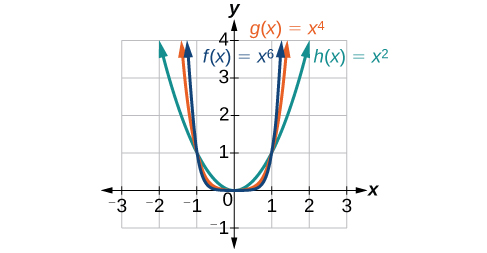
To describe the behavior as numbers become larger and larger, we use the idea of infinity. We use the symbol for positive infinity and for negative infinity. When we say that “ approaches infinity,” which can be symbolically written as we are describing a behavior; we are saying that is increasing without bound.
With the even-power function, as the input increases or decreases without bound, the output values become very large, positive numbers. Equivalently, we could describe this behavior by saying that as approaches positive or negative infinity, the values increase without bound. In symbolic form, we could write
Figure 3 shows the graphs of which are all power functions with odd, whole-number powers. Notice that these graphs look similar to the cubic function in the toolkit. Again, as the power increases, the graphs flatten near the origin and become steeper away from the origin.
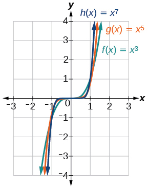
These examples illustrate that functions of the form reveal symmetry of one kind or another. First, in Figure 2 we see that even functions of the form are symmetric about the axis. In Figure 3 we see that odd functions of the form are symmetric about the origin.
For these odd power functions, as approaches negative infinity, decreases without bound. As approaches positive infinity, increases without bound. In symbolic form we write
The behavior of the graph of a function as the input values get very small ( ) and get very large ( ) is referred to as the end behavior of the function. We can use words or symbols to describe end behavior.
Figure 4 shows the end behavior of power functions in the form where is a non-negative integer depending on the power and the constant.
![Graph of an even-powered function with a positive constant. As x goes to negative infinity, the function goes to positive infinity; as x goes to positive infinity, the function goes to positive infinity. Graph of an odd-powered function with a positive constant. As x goes to negative infinity, the function goes to positive infinity; as x goes to positive infinity, the function goes to negative infinity. Graph of an even-powered function with a negative constant. As x goes to negative infinity, the function goes to negative infinity; as x goes to positive infinity, the function goes to negative infinity. Graph of an odd-powered function with a negative constant. As x goes to negative infinity, the function goes to negative infinity; as x goes to positive infinity, the function goes to negative infinity.](../../media/CNX_Precalc_Figure_03_03_004abcd.jpg)
Identifying the End Behavior of a Power Function
Describe the end behavior of the graph of
Solution
The coefficient is 1 (positive) and the exponent of the power function is 8 (an even number). As approaches infinity, the output (value of ) increases without bound. We write as As approaches negative infinity, the output increases without bound. In symbolic form, as We can graphically represent the function as shown in Figure 5.
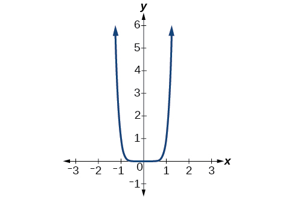
Identifying the End Behavior of a Power Function.
Describe the end behavior of the graph of
Solution
The exponent of the power function is 9 (an odd number). Because the coefficient is (negative), the graph is the reflection about the axis of the graph of Figure 6 shows that as approaches infinity, the output decreases without bound. As approaches negative infinity, the output increases without bound. In symbolic form, we would write
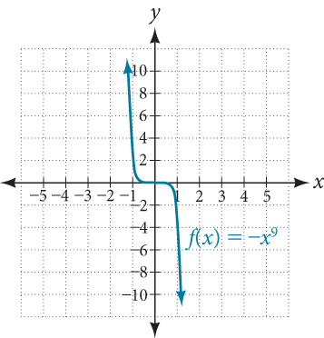
Identifying Polynomial Functions
An oil pipeline bursts in the Gulf of Mexico, causing an oil slick in a roughly circular shape. The slick is currently 24 miles in radius, but that radius is increasing by 8 miles each week. We want to write a formula for the area covered by the oil slick by combining two functions. The radius of the spill depends on the number of weeks that have passed. This relationship is linear.
We can combine this with the formula for the area of a circle.
Composing these functions gives a formula for the area in terms of weeks.
Multiplying gives the formula.
This formula is an example of a polynomial function. A polynomial function consists of either zero or the sum of a finite number of non-zero terms, each of which is a product of a number, called the coefficient of the term, and a variable raised to a non-negative integer power.
Identifying Polynomial Functions
Which of the following are polynomial functions?
Solution
The first two functions are examples of polynomial functions because they can be written in the form where the powers are non-negative integers and the coefficients are real numbers.
- can be written as
- can be written as
- cannot be written in this form and is therefore not a polynomial function.
Identifying the Degree and Leading Coefficient of a Polynomial Function
Because of the form of a polynomial function, we can see an infinite variety in the number of terms and the power of the variable. Although the order of the terms in the polynomial function is not important for performing operations, we typically arrange the terms in descending order of power, or in general form. The degree of the polynomial is the highest power of the variable that occurs in the polynomial; it is the power of the first variable if the function is in general form. The leading term is the term containing the highest power of the variable, or the term with the highest degree. The leading coefficient is the coefficient of the leading term.
Identifying the Degree and Leading Coefficient of a Polynomial Function
Identify the degree, leading term, and leading coefficient of the following polynomial functions.
Solution
For the function the highest power of is 3, so the degree is 3. The leading term is the term containing that degree, The leading coefficient is the coefficient of that term,
For the function the highest power of is so the degree is The leading term is the term containing that degree, The leading coefficient is the coefficient of that term,
For the function the highest power of is so the degree is The leading term is the term containing that degree, the leading coefficient is the coefficient of that term,
Identifying End Behavior of Polynomial Functions
Knowing the degree of a polynomial function is useful in helping us predict its end behavior. To determine its end behavior, look at the leading term of the polynomial function. Because the power of the leading term is the highest, that term will grow significantly faster than the other terms as gets very large or very small, so its behavior will dominate the graph. For any polynomial, the end behavior of the polynomial will match the end behavior of the term of highest degree. See Table 3.
| Polynomial Function | Leading Term | Graph of Polynomial Function |
|---|---|---|
|
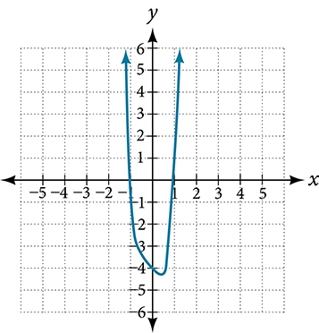 |
||
|
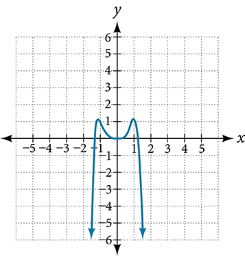 |
||
|
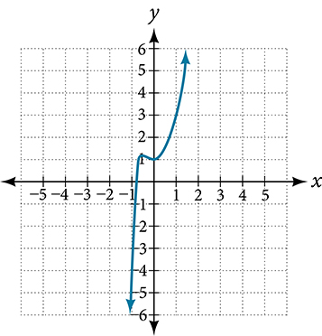 |
||
|
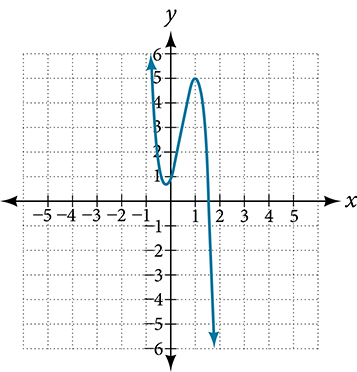 |
Identifying End Behavior and Degree of a Polynomial Function
Describe the end behavior and determine a possible degree of the polynomial function in Figure 7.
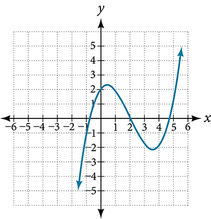
Solution
As the input values get very large, the output values increase without bound. As the input values get very small, the output values decrease without bound. We can describe the end behavior symbolically by writing
In words, we could say that as values approach infinity, the function values approach infinity, and as values approach negative infinity, the function values approach negative infinity.
We can tell this graph has the shape of an odd degree power function that has not been reflected, so the degree of the polynomial creating this graph must be odd and the leading coefficient must be positive.
Identifying End Behavior and Degree of a Polynomial Function
Given the function express the function as a polynomial in general form, and determine the leading term, degree, and end behavior of the function.
Solution
Obtain the general form by expanding the given expression for
The general form is The leading term is therefore, the degree of the polynomial is 4. The degree is even (4) and the leading coefficient is negative (–3), so the end behavior is
Identifying Local Behavior of Polynomial Functions
In addition to the end behavior of polynomial functions, we are also interested in what happens in the “middle” of the function. In particular, we are interested in locations where graph behavior changes. A turning point is a point at which the function values change from increasing to decreasing or decreasing to increasing.
We are also interested in the intercepts. As with all functions, the y-intercept is the point at which the graph intersects the vertical axis. The point corresponds to the coordinate pair in which the input value is zero. Because a polynomial is a function, only one output value corresponds to each input value so there can be only one y-intercept The x-intercepts occur at the input values that correspond to an output value of zero. It is possible to have more than one x-intercept. See Figure 9.
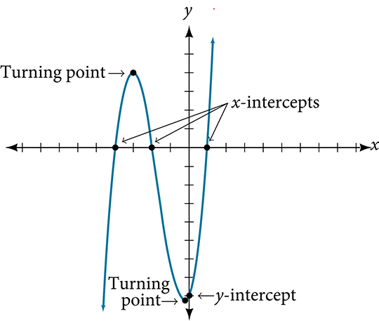
Determining the Intercepts of a Polynomial Function
Given the polynomial function written in factored form for your convenience, determine the and intercepts.
Solution
The y-intercept occurs when the input is zero so substitute 0 for
The y-intercept is (0, 8).
The x-intercepts occur when the output is zero.
The intercepts are and
We can see these intercepts on the graph of the function shown in Figure 10.
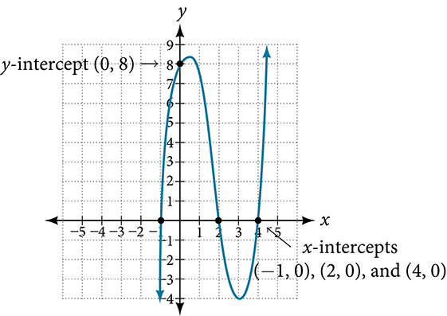
Determining the Intercepts of a Polynomial Function with Factoring
Given the polynomial function determine the and intercepts.
Solution
The y-intercept occurs when the input is zero.
The y-intercept is
The x-intercepts occur when the output is zero. To determine when the output is zero, we will need to factor the polynomial.
The x-intercepts are and
We can see these intercepts on the graph of the function shown in Figure 11. We can see that the function is even because
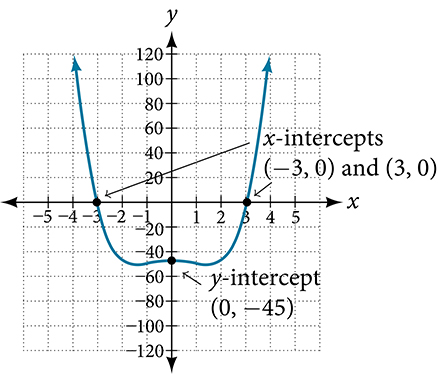
Comparing Smooth and Continuous Graphs
The degree of a polynomial function helps us to determine the number of intercepts and the number of turning points. A polynomial function of degree is the product of factors, so it will have at most roots or zeros, or intercepts. The graph of the polynomial function of degree must have at most turning points. This means the graph has at most one fewer turning point than the degree of the polynomial or one fewer than the number of factors.
A continuous function has no breaks in its graph: the graph can be drawn without lifting the pen from the paper. A smooth curve is a graph that has no sharp corners. The turning points of a smooth graph must always occur at rounded curves. The graphs of polynomial functions are both continuous and smooth.
Determining the Number of Intercepts and Turning Points of a Polynomial
Without graphing the function, determine the local behavior of the function by finding the maximum number of intercepts and turning points for
Solution
The polynomial has a degree of so there are at most -intercepts and at most turning points.
Drawing Conclusions about a Polynomial Function from the Graph
What can we conclude about the polynomial represented by the graph shown in Figure 12 based on its intercepts and turning points?
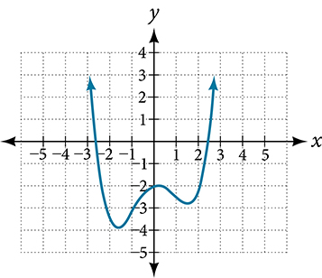
Solution
The end behavior of the graph tells us this is the graph of an even-degree polynomial. See Figure 13.
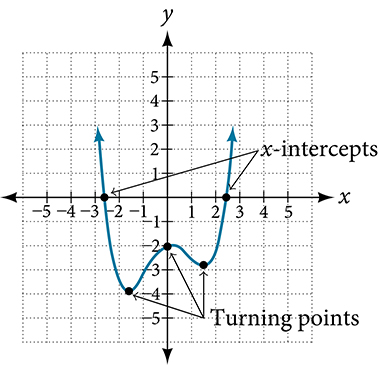
The graph has 2 intercepts, suggesting a degree of 2 or greater, and 3 turning points, suggesting a degree of 4 or greater. Based on this, it would be reasonable to conclude that the degree is even and at least 4.
Drawing Conclusions about a Polynomial Function from the Factors
Given the function determine the local behavior.
Solution
The intercept is found by evaluating
The intercept is
The intercepts are found by determining the zeros of the function.
The intercepts are and
The degree is 3 so the graph has at most 2 turning points.
Key Equations
| general form of a polynomial function |
Key Concepts
- A power function is a variable base raised to a number power. See Example 1.
- The behavior of a graph as the input decreases beyond bound and increases beyond bound is called the end behavior.
- The end behavior depends on whether the power is even or odd. See Example 2 and Example 3.
- A polynomial function is the sum of terms, each of which consists of a transformed power function with positive whole number power. See Example 4.
- The degree of a polynomial function is the highest power of the variable that occurs in a polynomial. The term containing the highest power of the variable is called the leading term. The coefficient of the leading term is called the leading coefficient. See Example 5.
- The end behavior of a polynomial function is the same as the end behavior of the power function represented by the leading term of the function. See Example 6 and Example 7.
- A polynomial of degree will have at most x-intercepts and at most turning points. See Example 8, Example 9, Example 10, Example 11, and Example 12.
Section Exercises
Verbal
Explain the difference between the coefficient of a power function and its degree.
Solution
The coefficient of the power function is the real number that is multiplied by the variable raised to a power. The degree is the highest power appearing in the function.
If a polynomial function is in factored form, what would be a good first step in order to determine the degree of the function?
In general, explain the end behavior of a polynomial with odd degree if the leading coefficient is positive.
Solution
As decreases without bound, so does As increases without bound, so does
What is the relationship between the degree of a polynomial function and the maximum number of turning points in its graph?
What can we conclude if, in general, the graph of a polynomial function exhibits the following end behavior? As and as
Solution
The polynomial function is of even degree and leading coefficient is negative.
Algebraic
For the following exercises, identify the function as a power function, a polynomial function, or neither.
Solution
is a power function because it contains a variable base raised to a fixed power. It is also a polynomial, with all coefficients except one equal to zero.
Solution
Neither
Solution
Neither
For the following exercises, find the degree and leading coefficient for the given polynomial.
Solution
Degree = 2, Coefficient = –2
Solution
Degree =4, Coefficient = –2
For the following exercises, determine the end behavior of the functions.
Solution
As , , as ,
Solution
As , , as ,
Solution
As , ,as ,
Solution
As , , as ,
For the following exercises, find the intercepts of the functions.
Solution
y-intercept is t-intercepts are
Solution
y-intercept is x-intercepts are and
Solution
y-intercept is x-intercepts are and
Graphical
For the following exercises, determine the least possible degree of the polynomial function shown.
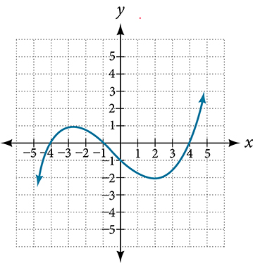
Solution
3
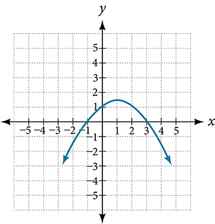
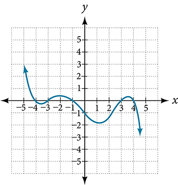
Solution
5
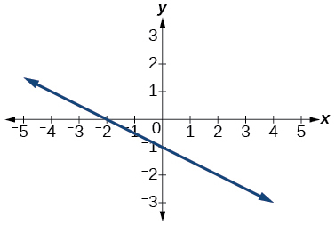
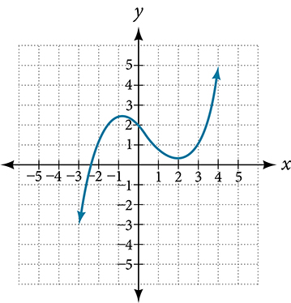
Solution
3
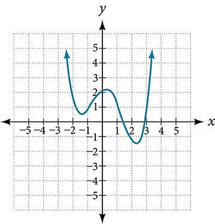
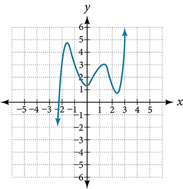
Solution
5
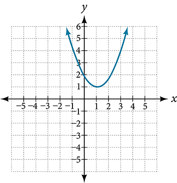
For the following exercises, determine whether the graph of the function provided is a graph of a polynomial function. If so, determine the number of turning points and the least possible degree for the function.
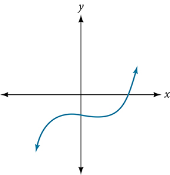
Solution
Yes. Number of turning points is 2. Least possible degree is 3.
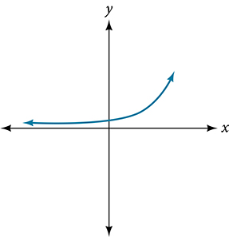
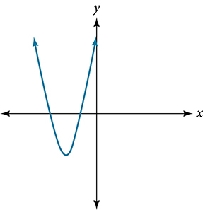
Solution
Yes. Number of turning points is 1. Least possible degree is 2.
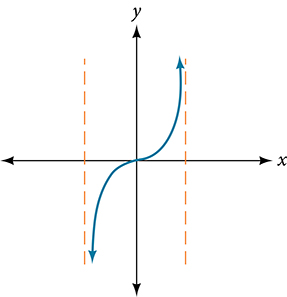
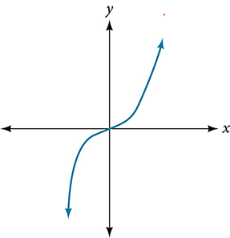
Solution
Yes. Number of turning points is 0. Least possible degree is 1.
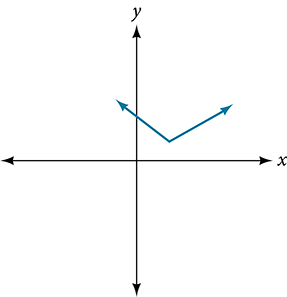
Solution
No.
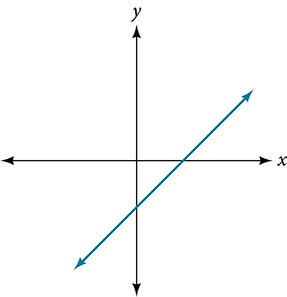
Solution
Yes. Number of turning points is 0. Least possible degree is 1.
Numeric
For the following exercises, make a table to confirm the end behavior of the function.
Solution
| 10 | 9,500 |
| 100 | 99,950,000 |
| –10 | 9,500 |
| –100 | 99,950,000 |
as , , as ,
Solution
| 10 | –504 |
| 100 | –941,094 |
| –10 | 1,716 |
| –100 | 1,061,106 |
as , , as ,
Technology
For the following exercises, graph the polynomial functions using a calculator. Based on the graph, determine the intercepts and the end behavior.
Solution
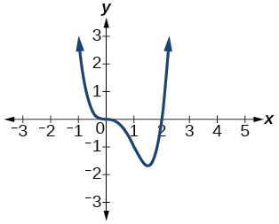
The intercept is The intercepts are As , , as ,
Solution
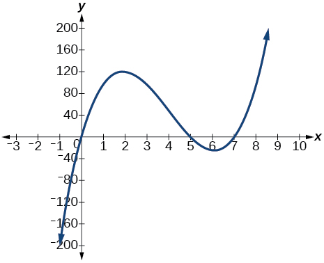
The intercept is . The intercepts are As , , as ,
Solution

The intercept is The intercept is As , , as ,
Solution
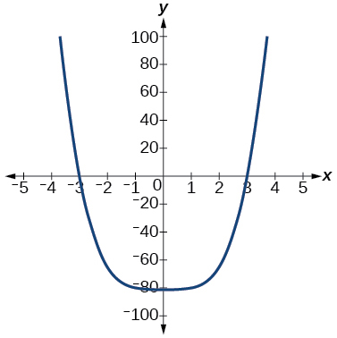
The intercept is The intercept are As , , as ,
Solution
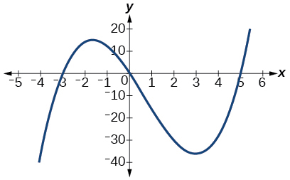
The intercept is The intercepts are As , , as ,
Extensions
For the following exercises, use the information about the graph of a polynomial function to determine the function. Assume the leading coefficient is 1 or –1. There may be more than one correct answer.
The intercept is The intercepts are Degree is 2.
End behavior: ,,
Solution
The intercept is The intercepts are Degree is 2.
End behavior: ,,,
The intercept is The intercepts are Degree is 3.
End behavior: ,,,
Solution
The intercept is The intercept is Degree is 3.
End behavior: ,,,
The intercept is There is no intercept. Degree is 4.
End behavior: ,,,
Solution
Real-World Applications
For the following exercises, use the written statements to construct a polynomial function that represents the required information.
An oil slick is expanding as a circle. The radius of the circle is increasing at the rate of 20 meters per day. Express the area of the circle as a function of the number of days elapsed.
A cube has an edge of 3 feet. The edge is increasing at the rate of 2 feet per minute. Express the volume of the cube as a function of the number of minutes elapsed.
Solution
A rectangle has a length of 10 inches and a width of 6 inches. If the length is increased by inches and the width increased by twice that amount, express the area of the rectangle as a function of
An open box is to be constructed by cutting out square corners of inch sides from a piece of cardboard 8 inches by 8 inches and then folding up the sides. Express the volume of the box as a function of
Solution
A rectangle is twice as long as it is wide. Squares of side 2 feet are cut out from each corner. Then the sides are folded up to make an open box. Express the volume of the box as a function of the width ( ).
Analysis
We can check our work by using the table feature on a graphing utility.
We can see from Table 2 that, when we substitute very small values for the output is very large, and when we substitute very large values for the output is very small (meaning that it is a very large negative value).